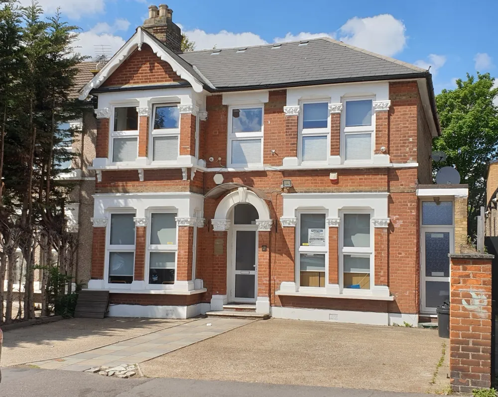
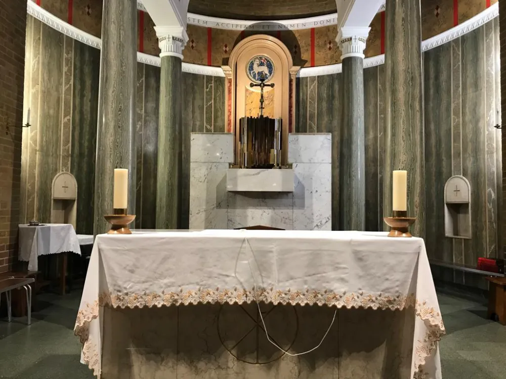
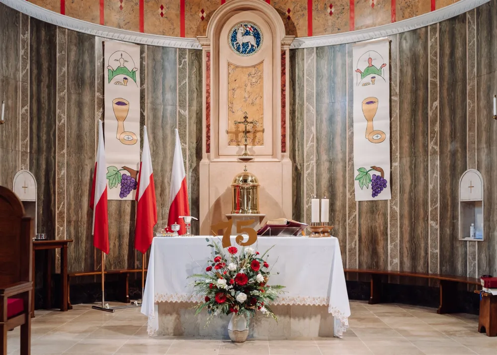
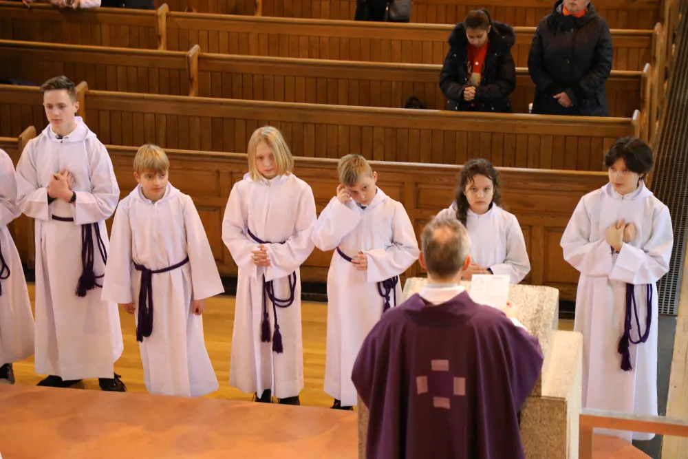
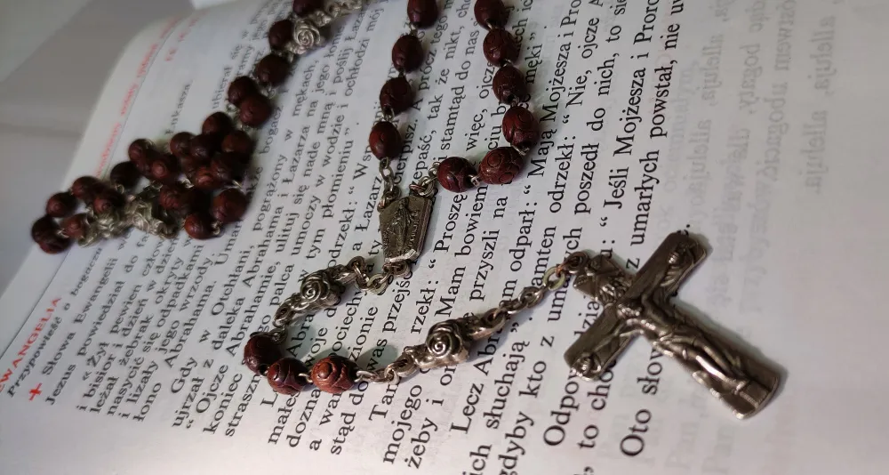
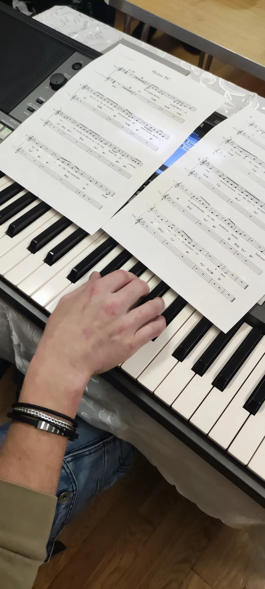

Forest Gate / Ilford
St. Cedd's Church
High Road, Ilford IG3 8SH
Dom Parafialny: 2 Ashgrove Road, IG3 9XE
Nawiguj →Polska Misja Katolicka · wschodni Londyn
Polska wspólnota katolicka w Ilford, Waltham Cross i Southend‑on‑Sea. Msza po polsku, sakramenty, dzieci, muzyka i ludzie, którzy czekają, żeby Cię powitać.
Aktualności
Ogłoszenia na ten tydzień i najbliższe wydarzenia. Wpisy znikają same, gdy minie ich termin.
Nie masz Facebooka? Ogłoszenia czytamy też podczas każdej niedzielnej Mszy.
Msze święte i nabożeństwa
Wybierz widok: kalendarz tygodnia albo podział na wspólnoty. Jednym kliknięciem dodasz Mszę do kalendarza w telefonie.
Nasze wspólnoty

St. Cedd's Church
High Road, Ilford IG3 8SH
Dom Parafialny: 2 Ashgrove Road, IG3 9XE
Nawiguj →
Our Lady of the Immaculate Conception & St Joseph
204 High Street, EN8 7DP
Polska wspólnota od 75 lat. Rada parafialna, ministranci, zespół i Polska Szkoła.
Nawiguj →
Sacred Heart Church
418 Southchurch Road, SS1 2QB
Msza po polsku w każdą niedzielę o 18:00.
Nawiguj →Życie wspólnoty

Kilkudziesięciu chłopców i dziewcząt. Wycieczki, turnieje i służba przy ołtarzu. Przyjdź do zakrystii i zapisz się.

Dwadzieścia osób, dwadzieścia tajemnic, jedna wspólna modlitwa. Każdy odmawia swoją dziesiątkę, kiedy mu wygodnie.
Ekspres.Do.Nieba. Śpiewa w każdą pierwszą niedzielę miesiąca. Szukamy głosów i instrumentów, kontakt po Mszy.

Dziecięcy zespół muzyczny z Waltham Cross. Nowi członkowie są zawsze mile widziani.
Dzień Dziecka, bal przebierańców, bal wszystkich świętych i turnieje. Parafia ma też swoje święta dla najmłodszych.
Sakramenty
Wybierz sakrament. Zobaczysz najważniejsze informacje i to, co trzeba załatwić w kancelarii.
Galeria
Wsparcie parafii
Dziękujemy za każdą ofiarę na potrzeby naszych wspólnot. Dane do przelewu skopiujesz jednym kliknięciem.
Kontakt